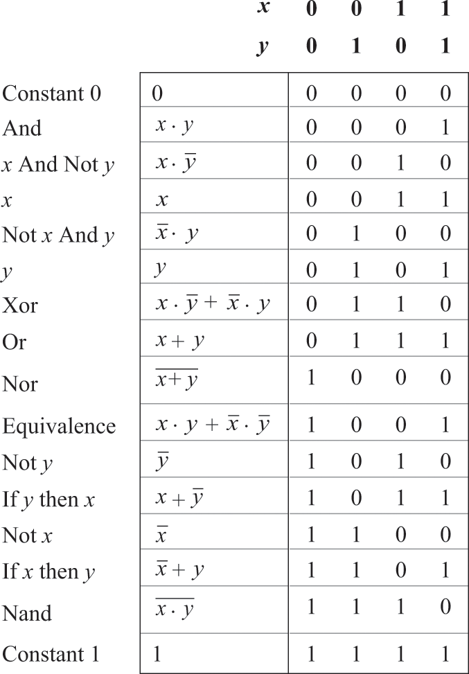

1.1 Boolean Logic
- All digital devices utilize chips to store and process binary information, all fundamentally built upon consistent elementary logic gates, irrespective of the diverse hardware implementations.
Boolean Algebra
- Boolean algebra handles two-state binary values, labelled as 1 and 0
- A Boolean function operates on these binary inputs and returns binary outputs
- The most basic of these functions are AND, OR and NOT
- These basic functions can be combined to make more complicated ones - NAND, NOR and XOR
- Furthermore, it can be said that any of the three basic functions can be expressed using only NAND gates ( or NOR )
- This means that EVERY Boolean function can be expressed solely in terms of NAND gates
AND
- This operator gives the result true if both operands are true
- Expressed as: $$ A \cdot B $$
OR
- This operator gives the result true if EITHER operands are true
- Expressed as: $$ A + B $$
NOT
- This operator gives the result true if the operand is false
- Expressed as: $$ \overline{A} $$ ### NAND
- This operator returns true if at least one of the operands is false
- Expressed as:$$ \overline{A \cdot B} $$
NOR
- This operator returns true only of both operands are false
- Expressed as: $$ \overline{A + B} $$
XOR
- This operator returns true if only 1 operand is true and the other is false
- Expressed as: $$ (A \cdot \overline{B}) + (\overline{A} \cdot B) $$
Others
- A full list of functions can be found here:

- A truth table is a convenient means for describing states, whereas a Boolean expression is a convenient form for realising this description as singular logic
Canonical Form
- Used to express a Boolean function in terms of And, Or and Not
- Seen in the initial x, y column in the image above
Sum of Product
- Find lines with out = 1
- Write inputs as a product of each other
- If the input is 0, write a bar above it
- Repeat step 2 for each remaining line with out = 1
- Sum each of these products together
Example
Truth Table

Sum of Product

Product of Sum
- Find lines with out = 0
- Write inputs as sum of each other
- if input = 1, write with bar above
- Repeat step 2 for every line with out = 0
- Take product of each of the sums
Example
Truth Table

Product of Sums

Karnaugh Map
- Simplified version
- Not covered in this course